The election is drawing near, and it's been 106 days since Kamala Harris became the Democratic Party's presumptive (and then official) presidential nominee.
When Biden first dropped out in late July, momentum was strong for the Harris campaign. Instead of feeling like November would show an inevitable Trump victory, voters nationwide were enthused by the contrast of a young, glass-ceiling-breaking candidate. However, it takes effort to keep momentum going, and Harris’ campaign has lacked that effort.
Table of Contents
0. A Much-Needed Preface
1. First Signs of Cracking: The DNC Speech
a) Immigration; the Mythical Crime Wave
b) Foreign Policy: The Optics Can't Get Worse
c) Did This Work? Check The Polls
2. The In-Between: Rallies, Interviews, or Lack Thereof
3. The Closing Argument
4. Four(-ish) Paths to Victory
a) 282-256, Blue Iowa
b) 276-262, No Iowa
c) 270-268, A Real Nailbiter
d) 325-213, The Margin of Error Kicks In
5. A Drained Conclusion
0. A Much-Needed Preface
This article is not written to be an endorsement of Republican presidential candidate Donald Trump. If Trump has a fair opinion on something, I’ll “give him credit for it”, but it’s rare to come across a sensible view of his. Additionally, though this piece is meant to change your view of Kamala Harris and her campaign, it is not necessarily meant to change your vote on November 5th. If you’d like to vote for her out of adoration for her policies (interesting opinion), do that. If you’d like to vote for her because you believe she’s the lesser of two evils, do that. If you’d like to vote for Donald Trump, you may be too far gone for me to change your mind, so you can go ahead and continue with that. The same goes for people voting for a third party or completely abstaining: do what you want! What I do hope you take from this is that both major candidates are extremely flawed, and the concept of “facts” has been twisted in this election cycle. We must be critical of both parties and their failures to represent and care for the American people.
1. First Signs of Cracking: The DNC Speech
REUTERS/Kevin Wurm
Harris came onto the election cycle scene unprecedentedly late, but as she arrived, she raised a historic amount of money; within 24 hours of Biden’s dropout announcement, the campaign had raised 81 million dollars.1 Despite this, she still needed the delegates to get this nomination certified, and that was to happen at the Democratic National Convention in August. However, with this came a speech that started strong and quickly became questionably awful.
And with this election, and — and with this election, our nation — our nation, with this election, has a precious, fleeting opportunity to move past the bitterness, cynicism and divisive battles of the past, a chance to chart a new way forward. Not as members of any one party or faction, but as Americans.
The speech began with surprisingly good imagery describing Harris’ upbringing, creating good appeal for the working- and middle-class Americans listening in. This transitioned into a brief yet touching story about a friend of hers being sexually abused by her father, which then inspired Kamala to become a prosecutor – “for the people.” You might be thinking, “This sounds pretty nice, and if not that, it’s standard; how could this go wrong?”
a) Immigration; the Mythical Crime Wave
Well, shortly after, she presents the topic of the border. If the Democratic party were sensible, they’d attack Republican rhetoric on this issue using stone-cold facts. For example, a study directly funded by the U.S. Department of Justice2 using crime data from Texas concluded that undocumented immigrants commit substantially less crime than U.S.-born citizens; in fact, U.S. citizens “are over two times more likely [to be] arrested for violent crime.”
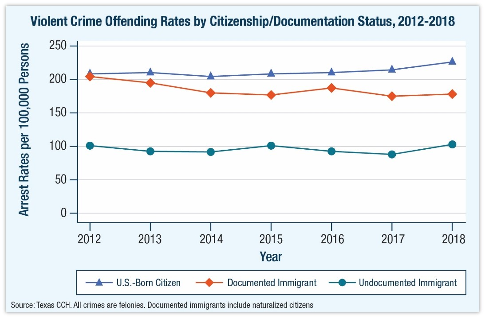Of course, there are 49 other states in the country, but Texas stands out as not only a Mexico-bordering state but also the only state that records criminal convictions by immigration status.
A 2017 study3 from the Journal of Ethnicity in Criminal Justice also deduces that there is no basis for assuming immigration and crime rates have a direct relationship; in fact, there is stronger evidence to show that increased immigration results in less crime, especially property crime.
Contrary to this overwhelming evidence, though, Republicans still spew false and harmful rhetoric about immigrants. For example, at the Republican National Convention, Donald Trump said:
We also have an illegal immigration crisis, and it’s taking place right now. It’s a massive invasion at our southern border that has spread misery, crime, poverty, disease, and destruction to communities all across our land. Nobody’s ever seen anything like it.
Has it truly spread crime? Well, let’s look at even more data.
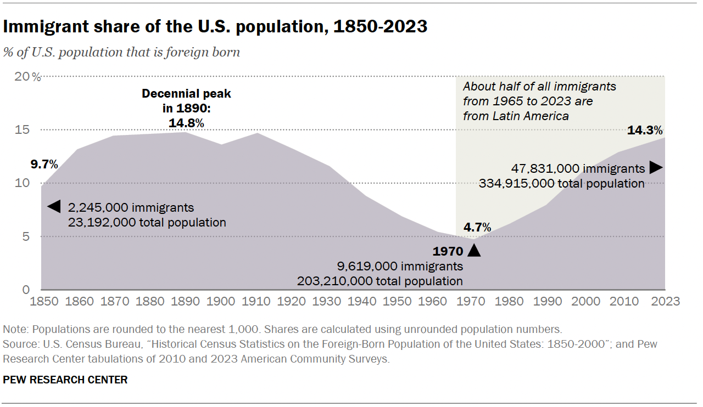 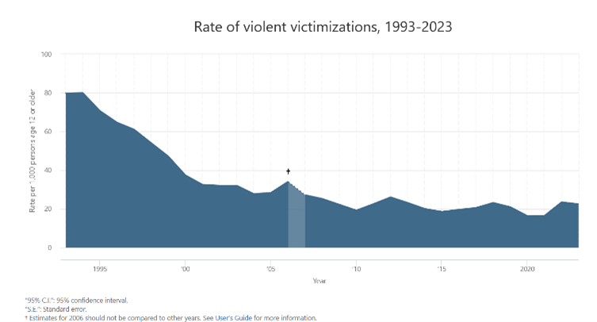 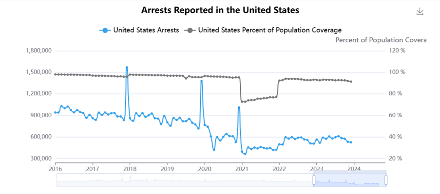Above are three graphs. The first graph was created by the Pew Research Center4 using information from the U.S. Census Bureau and describes the percentage of immigrants in the United States population over time, with small notes indicating the amount at different periods. The two other graphs are from the National Crime Victimization Survey5 and the Federal Bureau of Investigation6, respectively, and they both represent violent victimizations and arrests in the United States over time. Each graph shares coverage of the period after 2016, and with that, one can see that there is no basis to assume an increase in immigrants leads to an increase in crime.
Now, was any of this presented when speaking of the border?
Absolutely not.
What was presented was dissatisfaction with Trump for “killing” the Border Act of 20247, which was introduced into the House to tackle “border security and combatting fentanyl” with billions of taxpayer dollars allocated to this cause. Its proposals include massive increases in funding for detention centers – not increasing their quality but increasing their number of beds. Of course, this is a great idea because our immigration detention centers famously have great, humane conditions, like inadequate medical care8 and the use of solitary confinement rather than proper mental care9.
The topic of fentanyl is also an interesting one; in 2022, 89% of fentanyl traffickers were U.S. citizens10, rather than migrants. Additionally, during 2023, roughly 93% of fentanyl seizures “occurred at legal crossing points or interior vehicle checkpoints, not on illegal migration routes.10”
This tough attitude on immigration with little basis in fact won’t stop illegal immigration, though. Even if this Border Act finds a way to pass if Harris is elected president, it will not eliminate the motives people have to flee to the United States. It is a similar situation to Republican views on abortion; making abortion illegal will eliminate legal abortions while increasing illegal abortions, which tend to be more unsafe. The number of illegal and legal abortions combined will not see a significant decrease11, as one has not tackled the reasons women get abortions. In cases where it is not a required medical procedure to save the life of the mother, this need for an abortion is likely to be caused by a lack of sex education12, a lack of access to contraceptives13, or a combination of both. In the case of immigration, restricting it further, increasing punishment for illegal crossings, and refusing to make real reforms to the asylum system only increases the desperation of people wanting to immigrate. As a result, they’re more likely to consult cartels in the area and pay to be transported across the border in trailers or trucks, which often overheat and cause death14 for the migrants being “smuggled.”
In conclusion, Harris could care less about the facts on immigration. Instead, she’s operating on the assumption that Republicans are correct on the issue, but they’re just not cruel enough about it. Great! What’s next?
b) Foreign Policy: The Optics Can't Get Worse
As commander in chief, I will ensure America always has the strongest, most lethal fighting force in the world.
What is going on?
I guess I had the misconception that Democrats were the doves in the two-party system. Even Donald Trump has had moments where he expresses views more dovish than this one, as he did in a 2016 Republican debate against Jeb Bush:15
Obviously, the war in Iraq was a big fat mistake… we spent two trillion dollars, thousands of lives, we don’t even have [control over Iraq]… George Bush made a mistake. We can make mistakes, but that one was a beauty. We should have never been in Iraq. We have destabilized the Middle East. …I want to tell you: [the Bush administration] lied. They said there were weapons of mass destruction. There were none, and they knew there were none.
After that last sentence, Trump was quite audibly booed by the audience.
Of course, Trump is not a legitimate dove when you look at his actions – dropping a record number of bombs on Afghanistan in 2018 and 2019 as Commander-in-Chief16 – but he at least presents himself in such a manner optics-wise. What he said in this 2016 debate is more anti-war than much of anything Harris has pushed in this speech so far (and the rest of her campaign, as we will soon analyze). We see this quite clearly when she shifts the focus to Israel…
President Biden and I are working around the clock… to get a hostage deal and a cease-fire deal done. …I will always stand up for Israel’s right to defend itself because the people of Israel must never again face the horror that a terrorist organization called Hamas caused on Oct. 7…
She says this, while also following with:
At the same time, what has happened in Gaza over the past 10 months is devastating. So many innocent lives lost. Desperate, hungry people fleeing for safety, over and over again. The scale of suffering is heartbreaking.
Who is causing the loss of those innocent lives? Why are these people “desperate, hungry” and “fleeing for safety”? Who is sending billions in military aid to the people who are causing this mass devastation and suffering of the Palestinian people? What great questions with answers that the Democratic party will never find. Despite feeling “heartbroken” by this mysterious suffering, Harris is still in opposition to an arms embargo on Israel.17
c) Did This Work? Check The Polls
Now, maybe she has good reason for being at best ignorant, and at worst deliberately lying. Maybe that is how you truly captivate the American people and sweep the election. Let’s see how the populace responded after this August 22nd speech by taking a look at FiveThirtyEight’s national poll averages.
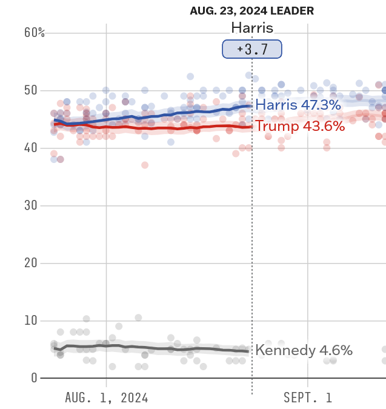That looks pretty good considering how close the election is! Let’s look at the bigger picture.
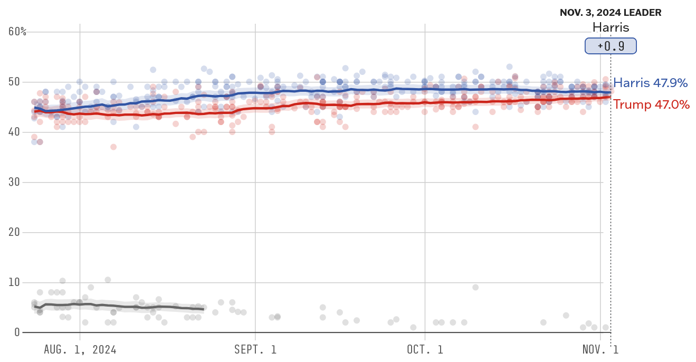Oh... oh, okay.
This 3.7-point lead has not been re-achieved by Harris since. She hasn’t had a three-point lead or higher since September 18th. Now, she sits at a whopping 0.9-point lead. Before August 22nd, her numbers were quite steadily increasing.
This is not to say she will lose the election, but it is scarily close for the Democrats. Closer than one would prefer in an election that is being dubbed “the most consequential in our lifetime” … except politicians say that every time, it seems.
Well, maybe she’s changed her rhetoric since then, and the poll numbers are unrelated to this speech. I have hope, so let’s investigate!
2. The In-Between: Rallies, Interviews, or Lack Thereof
Will Lanzoni/CNN
It didn't get better.
Yeah, she’s still “good” (from a Democrat perspective) on abortion – that wasn’t a big focal point of the DNC speech, as that’s a very obvious issue she has the upper hand on. She instead spoke of that issue at her other rallies later.
Besides that, I can’t praise her much. I understand that opinions change, but it is too easy for Republicans to attack her for flip-flopping. In 2018, she was near Bernie Sanders’ level of progressive: in favor of single-payer Medicare for All, supported the Green New Deal, and anti-fracking. None of those are true for Harris’ 2024 campaign, so what happened? CNN’s Dana Bash asked such directly about fracking during Harris’ first interview 18, and this was Harris’ reply:
Well, let’s be clear. My values have not changed. I believe it is very important that we take seriously what we must do to guard against what is a clear crisis in terms of the climate. And to do that, we can do what we have accomplished thus far.
Bash listens on, though, waiting for something of substance after this nothingburger of a response:
The Inflation Reduction Act, what we have done to invest by my calculation over t— probably a trillion dollars over the next ten years investing in a clean energy economy. What we’ve already done creating over 300,000 new clean energy jobs. That tells me from my experience as vice president we can do it without banning fracking. In fact, Dana — Dana, excuse me — I cast the tie-breaking vote that actually increased leases for fracking as vice president. So I’m very clear about where I stand.
Bash then asked, "And was there some policy or scientific data that you saw that you said, “Oh, okay. I get it now”?"
Harris responds,"What I have seen is that we can — we can grow and we can increase a thriving clean energy economy without banning fracking."
This implies that fracking is “clean energy”… which it is clearly not. In a year, fracking can produce ~450,000 tons worth of air pollution19; it also produced 280 billion gallons of toxic wastewater in 201219.
Has there been much else? Well, not really. She did mention a policy banning price gouging, which sounds quite nice, but that’s it for the Harris 2024 campaign. Is it clear enough that the momentum has vanished?
3. The Closing Argument
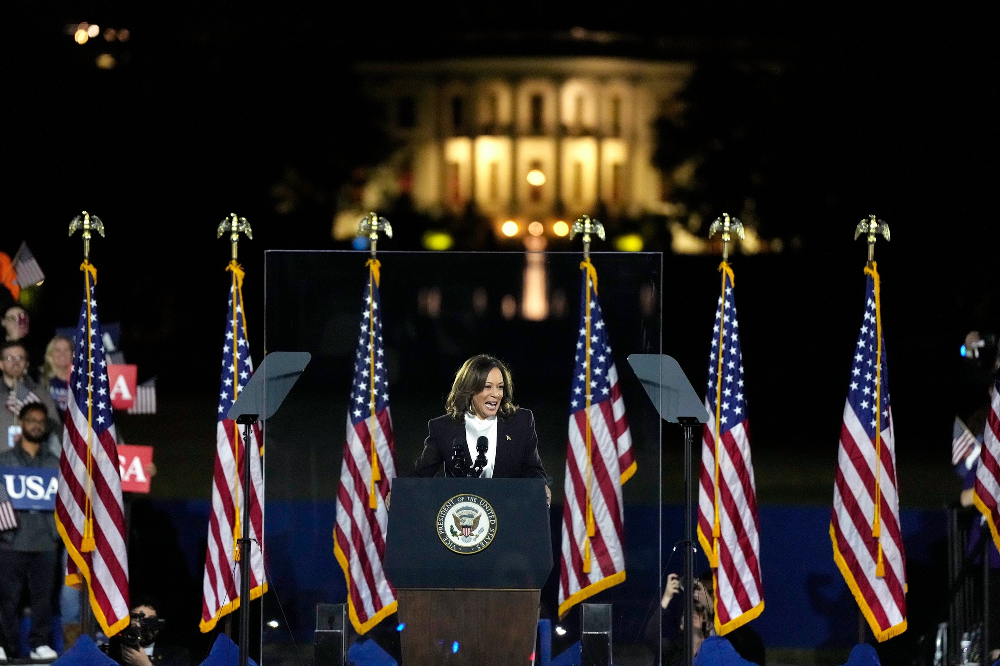Kent Nishimura/Getty Images
The speech begins with a condemnation of Donald Trump and his inciting/complicity in the January 6th, 2021, storming of the U.S. Capitol building in an attempt to overturn the results of the 2020 election. Arguably, she talks about Trump for a bit too long before getting to her own policy positions.
And as President, I will fight to help first-time homebuyers with your down payment, take on the companies that are jacking up rent and build millions of new homes. For years, we have heard excuses about why America can’t build enough housing. Enough with the excuses. I’m going to cut the red tape and work with the private sector and local governments to speed up building and get it done.
In reality, America has a surplus of housing20. The shortage we do have is a shortage of affordable housing21. How is further deregulation (working with the private sector, which includes “the companies that are jacking up rent”) supposed to aid homebuyers in this situation? How about considering building public housing?22
And look, on another subject, politicians have got to stop treating immigration as an issue to scare up votes in an election. And instead, treat it as the serious challenge that it is that we must finally come together to solve. I will work with Democrats and Republicans to sign into law the border security bill that Donald Trump killed.
What is challenging about immigration besides the awful immigration system of the United States? Instead of internal reforms to the asylum process and detention centers, apparently, we just need more “border security.” Why? Because the immigrants are bringing in crime and fentanyl… except we’ve already debunked that nativist lie.
And when I am President, we will quickly remove those who arrive here unlawfully, prosecute the cartels, and give Border Patrol the support they so desperately need.
Is Harris actually pandering so hard to the right that she’s saying “Mass Deportation Now”, the war cry shouted at every Trump rally to deport all undocumented immigrants? Why should we advocate removing them all (which would hurt the economy if you weren’t worried about the disruptions it would cause to their lives) instead of providing them paths to citizenship?23 How did her rhetoric on immigration get worse?
I’ve lived the promise of America. And I see the promise of America in all of you. In all of you. I see it…I see it in Republicans who have never voted for a Democrat before, but have put the Constitution of the United States over party.
So much pandering to the Republicans for no real reason, which obviously isn’t working if the election is still horribly close. Rather than any improvements to the campaign, it has only gotten worse. I can’t say I should’ve expected anything more from the Democrats, since their strategies were similar levels of awful in 2016.
4. Four(-ish) Paths to Victory
Kamala Harris is still likely to win tomorrow, despite my anger with her campaign. Let us look at a few ways she could get to this point.
a) 282-256, Blue Iowa
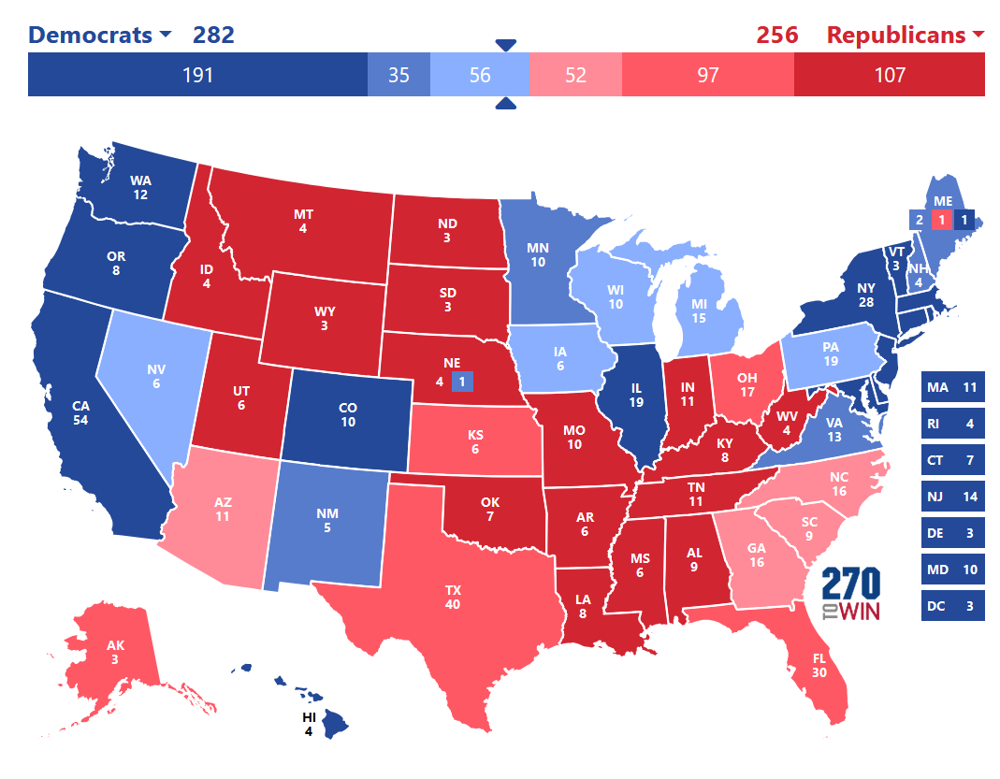In this possibility, Harris loses Arizona, Georgia, and North Carolina, while winning Michigan, Nevada, Pennsylvania, Wisconsin... and Iowa? If I wrote this a week ago, I’d sound deranged, and rightfully so. But with the recent Selzer poll24 putting Kamala at 3 points ahead of Trump, blue Iowa is a legitimate possibility. If not that, Trump would win Iowa by a scarily close amount of votes, likely down to the small thousands. In terms of Arizona, Georgia, and North Carolina, it’s hard to see Harris win any more than one of these states; MAYBE Georgia and a smaller maybe on North Carolina, but Arizona seems destined to be red. Maybe I’m wrong, though!
b) 276-262, No Iowa
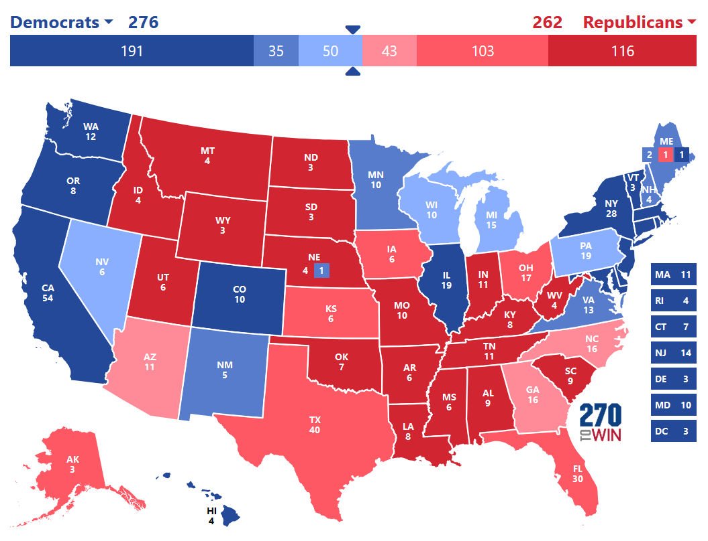Pretty much the same as above but without the mythical blue Iowa. Next!
c) 270-268, A Real Nailbiter
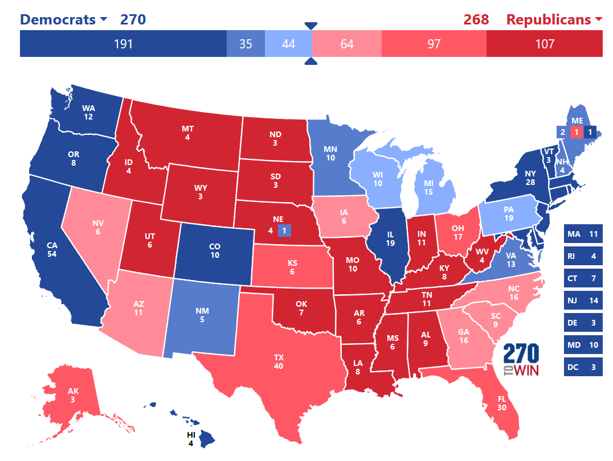This is if the Dems get unlucky and lose Nevada. They’ll still win but by a mere two electoral votes. If this truly does happen, I’m very uncertain of the Democrats actually winning; what’s more likely is a 2000-style legal dispute commencing. If that does happen, we all know it won’t end well. I guess it’s not much of a path to victory but more of a path to the election being stolen (I sound like a 2020-Stop-The-Steal-Trumper, but Al Gore legitimately did win more votes25 in the state of Florida, with or without the votes that mistakenly went to Pat Buchanan26).
d) 325-213, The Margin of Error Kicks In
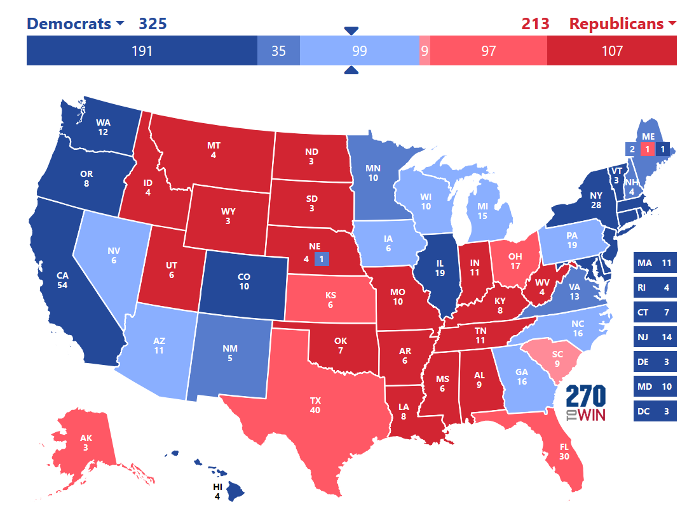I don’t really expect this to happen, but 2020 showed me that anything is possible. Not necessarily a landslide, but it is quite a solid victory for the Democrats. This wouldn’t nullify my criticisms; this race should have never gotten this close, especially against such an awful candidate.
5. A Drained Conclusion
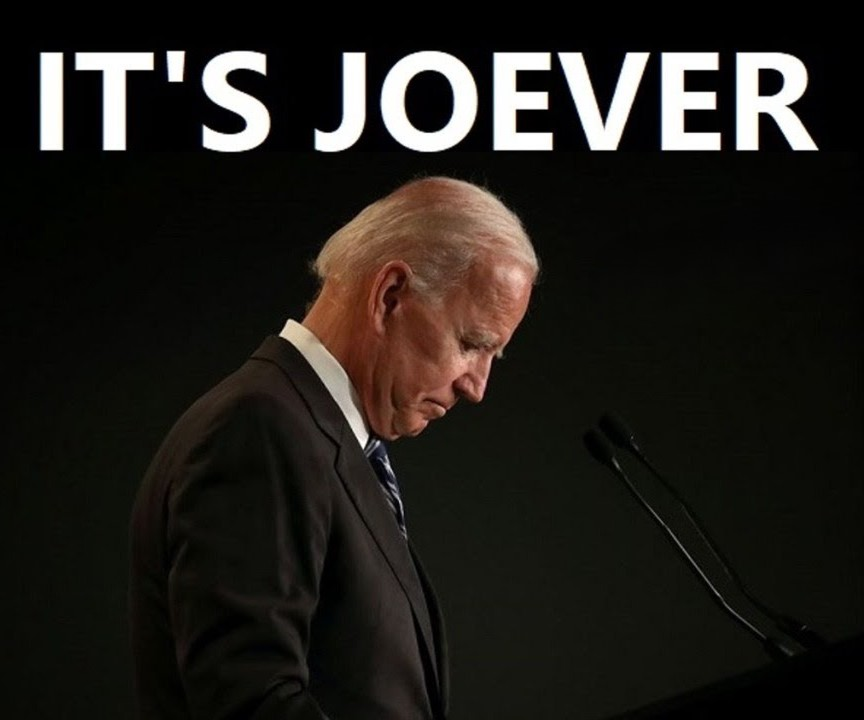It's so joever.
Again, Kamala Harris will still probably be our next president, but I can’t say I’m particularly enthusiastic about it. She has more charisma than Biden, sure, but a sizeable part of her campaign has been built on lies because of the use of right-wing framing on issues. With this, the “inclusive” Democrats seem to be doing nearly the same as the Republicans to fuel anti-immigrant sentiment nationwide. Similarly, there is only emptiness in Harris’ “hopes for peace” in the Gaza Strip and Lebanon. Running on a ticket without Joe Biden gives her a chance to distance herself from his extreme pro-Israel position, but she has failed to take a step toward that, despite it hurting her poll numbers (especially in the swing state of Michigan). With American Muslim voters, Jill Stein and Harris are neck-and-neck, as the former has 42.3% and the latter has 41% of their support27. Isn’t it puzzling as to why someone would not be comfortable voting for a candidate who refuses to interfere in the mass killing and devastation of their family – whether it be family by blood or faith? Alas, I hate to feel disappointed, because I should have seen this all coming.
Readers, have a great week! Stay warm and stay safe.
Further Reading
1 Samuels, Brett. “Harris Breaks 24-Hour Fundraising Record after Biden Drops Out.” The Hill, July 22, 2024. thehill.com/homenews/campaign/4786610-harris-breaks-fundraising-record/.
2 Light, Michael T. “Unauthorized Immigration, Crime, and Recidivism: Evidence from Texas.” National Institute of Justice. U.S. Department of Justice, January 2024. ojp.gov/pdffiles1/nij/grants/308552.pdf.
3 Adelman, Robert, Lesley Williams Reid, Gail Markle, Saskia Weiss, and Charles Jaret. “Urban Crime Rates and the Changing Face of Immigration: Evidence across Four Decades.” Journal of Ethnicity in Criminal Justice 15, no. 1 (November 21, 2016): 52–77. doi.org/10.1080/15377938.2016.1261057.
4 Moslimani, Mohamad, and Jeffrey S. Passel. “What the Data Says about Immigrants in the U.S.” Pew Research Center. Pew Research Center, September 27, 2024. pewresearch.org/short-reads/2024/09/27/key-findings-about-us-immigrants/.
5 National Crime Victimization Survey. “NCVS Dashboard.” ncvs.bjs.ojp.gov, n.d. ncvs.bjs.ojp.gov/multi-year-trends/crimeType.
6 Federal Bureau of Investigation. “Crime Data Explorer.” Cjis.gov, 2023. cde.ucr.cjis.gov/LATEST/webapp/#/pages/explorer/crime/arrest.
7 Murphy, Christopher. Border Act of 2024, Pub. L. No. S.4361, Congress.gov (2024). congress.gov/bill/118th-congress/senate-bill/4361/text.
8 Cho, Eunice Hyunhye, and Tessa Wilson. “Deadly Failures: Preventable Deaths in U.S. Immigrant Detention.” American Civil Liberties Union, June 21, 2024. aclu.org/publications/deadly-failures-preventable-deaths-in-us-immigrant-detention.
9 Wilson, Tessa. “‘Endless Nightmare’: Torture and Inhuman Treatment in Solitary Confinement in U.S. Immigration Detention.” PHR, February 6, 2024. phr.org/our-work/resources/endless-nightmare-solitary-confinement-in-us-immigration-detention/.
10 Bier, David. “U.S. Citizens Were 89% of Convicted Fentanyl Traffickers in 2022.” Cato.org, 2023. cato.org/blog/us-citizens-were-89-convicted-fentanyl-traffickers-2022.
11 Bearak, Jonathan, Anna Popinchalk, Bela Ganatra, Ann-Beth Moller, Özge Tunçalp, Cynthia Beavin, Lorraine Kwok, and Leontine Alkema. “Unintended Pregnancy and Abortion by Income, Region, and the Legal Status of Abortion: Estimates from a Comprehensive Model for 1990–2019.” The Lancet Global Health 8, no. 9 (July 22, 2020): e1152–61. doi.org/10.1016/S2214-109X(20)30315-6.
12 Cheedalla, Aneesha, Caroline Moreau, and Anne E. Burke. “Sex Education and Contraceptive Use of Adolescent and Young Adult Females in the United States: An Analysis of the National Survey of Family Growth 2011–2017.” Contraception: X 2 (2020): 100048. doi.org/10.1016/j.conx.2020.100048.
13 Williams, Diane Duke. “Access to Free Birth Control Reduces Abortion Rates.” WashU Medicine, October 12, 2012. medicine.washu.edu/news/access-to-free-birth-control-reduces-abortion-rates/.
14 Hernández, Arelis R, Nick Miroff, and Maria Sacchetti. “46 Migrants Found Dead in Texas inside Sweltering Tractor-Trailer.” Washington Post. The Washington Post, June 28, 2022. washingtonpost.com/nation/2022/06/27/migrants-dead-texas/.
15 CBS News. “Donald Trump Attacks George W. Bush on 9/11, Iraq.” YouTube Video. YouTube, February 13, 2016. youtube.com/watch?v=H4ThZcq1oJQ.
16 United States Air Forces Central Command. “Afghanistan Combined Forces Air Component Commander 2013-2019 Airpower Statistics.” U.S. Air Forces Central, December 31, 2019. afcent.af.mil/Portals/82/Documents/Airpower%20summary/(U)%20APPROVED%20Dec%202019%20APS%20Data.pdf?ver=2020-01-27-023439-697.
17 Marans, Daniel. “Harris Says She Will Not Add Conditions to U.S. Weapons for Israel.” HuffPost, August 30, 2024. https://www.huffpost.com/entry/kamala-harris-gaza-war-biden-arms-policy.
18 CNN. “READ: Harris and Walz’s Exclusive Joint Interview with CNN.” CNN. CNN, August 30, 2024. cnn.com/2024/08/29/politics/harris-walz-interview-read-transcript/index.html.
19 Ridlington, Elizabeth, and John Rumpler. “Fracking by the Numbers Key Impacts of Dirty Drilling at the State and National Level,” October 2013. environmentamerica.org/wp-content/uploads/2022/08/EA_FrackingNumbers_scrn-6.pdf.
20 McClure, Kirk, and Alex Schwartz. “Where Is the Housing Shortage?” Housing Policy Debate, April 18, 2024, 1–15. doi.org/10.1080/10511482.2024.2334011.
21 National Low Income Housing Coalition. “The GAP.” National Low Income Housing Coalition, 2024. nlihc.org/gap.
22 Denvir, Daniel, and Yonah Freemark. “Just Build the Homes.” Slate, May 22, 2023. slate.com/business/2023/05/public-housing-upzoning-yimby-affordability-crisis.html.
23 Peri, Giovanni, and Reem Zaiour. “Citizenship for Undocumented Immigrants Would Boost U.S. Economic Growth.” Center for American Progress. Center for American Progress, June 14, 2021. americanprogress.org/article/citizenship-undocumented-immigrants-boost-u-s-economic-growth/.
24 Pfannenstiel, Brianne. “Iowa Poll: Kamala Harris Leapfrogs Donald Trump to Take Lead near Election Day. Here’s How.” The Des Moines Register. Des Moines Register, November 2, 2024. desmoinesregister.com/story/news/politics/iowa-poll/2024/11/02/iowa-poll-kamala-harris-leads-donald-trump-2024-presidential-race/75354033007/.
25 Kettle, Martin. “Florida ‘Recounts’ Make Gore Winner.” The Guardian, January 29, 2001, sec. World news. theguardian.com/world/2001/jan/29/uselections2000.usa.
26 Ward, Jonathan N., Ken Shotts, Jasjeet S. Sekhon, Walter R. Mebane, Jr., Michael C. Herron, and Henry E. Brady. “The Butterfly Did It: The Aberrant Vote for Buchanan in Palm Beach County, Florida.” Stanford Graduate School of Business, n.d. gsb.stanford.edu/faculty-research/publications/butterfly-did-it-aberrant-vote-buchanan-palm-beach-county-florida.
27 Hooper, Ibrahim. “BREAKING: CAIR’s Final Election Poll Shows Stein and Harris Still Tied among Muslim Voters, Trump Trailing.” Cair.com, November 2024. cair.com/press_releases/breaking-cairs-final-election-poll-shows-stein-and-harris-still-tied-among-muslim-voters-trump-trailing/.